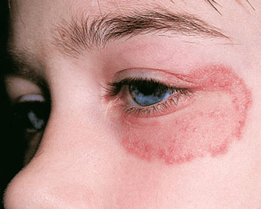
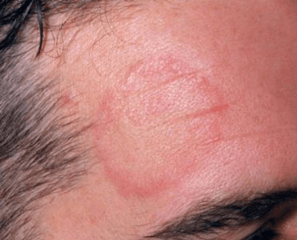

Tinea faciei is a superficial infection of the skin. It is part of the dermatophyte skin
infections and it can affect people of different sexes and ages. In children and in women,
tinea faciei affects the skin on the face, including the chin and the upper lip. In the
male population, this infection is known as tinea barbae, as it occurs only on areas that
have hair (such as the beard area).
What happens is that the dermatophytes (which are actually keratinophilic fungi) will release
enzymes (known as keratinases). These enzymes are going to invade the upper layer of the
epidermis, causing the lesions on the skin and an inflammatory reaction. Tinea faciei
occurs all over the world but it has a higher frequency in the tropical regions. This is
because the high temperatures and the constant humidity are considered to be triggering factors.


These are the most common methods used for the diagnosis of tinea faciei:
These are the most common home remedies recommended for tinea faciei: